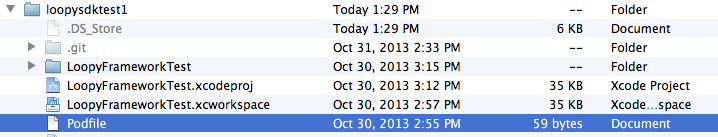

Table of contents
The Loopy Library provides a simple set of classes and methods built upon the Loopy REST API.
App developers can elect to use either the pre-defined user interface controls provided in the Loopy UI framework, or “roll their own” using direct Library calls.
All calls to the Loopy Library are asynchronous, meaning that your application will not “block” while waiting for a response from the Loopy server.
Note
If you are upgrading from a previous release, check out the Upgrading Guide.
CocoaPods is an easy, elegant way to manage library dependencies in iOS. No need to manually import frameworks or deal with compiler flags. After a one-time installation of RubyGems (CocoaPods is Ruby-based), a single command-line operation is all that’s needed to install or upgrade Loopy. For more information on CocoaPods, check out the CocoaPods homepage.
$ ruby -v
ruby 1.8.7 (2012-02-08 patchlevel 358) [universal-darwin12.0]
$ gem -v
2.1.5
$ sudo gem install cocoapods
$ pod setup
Note
Installing RubyGems and/or CocoaPods can take up to a minute, and may appear unresponsive for brief periods during install.
platform :ios
pod 'Loopy'
Note
If you already use an Xcode workspace to manage your project files, you will need to customize your Podfile to include CocoaPods for each Xcode project and app target. See this CocoaPods help page for more information.
Once complete, your Podfile should appear in this location in your project directory:
In the command line at the root directory of your project, enter the following:
$ pod install
In order for Loopy to track install and open events (as well as enable itself for recording other operations), it must be initialized. To do so, add the following code to your AppDelegate:
- (BOOL)application:(UIApplication *)application didFinishLaunchingWithOptions:(NSDictionary *)launchOptions {
loopyAPIClient = [[STAPIClient alloc] initWithAPIKey:@"<YOUR-API-KEY>"
loopyKey:@"<YOUR-API-SECRET>"];
[loopyAPIClient getSessionWithReferrer:@"<YOUR-REFERRER>"
postSuccess:^(AFHTTPRequestOperation *operation, id responseObject) {
//any logic following a successful Loopy init can go here
}
failure:^(AFHTTPRequestOperation *operation, NSError *error) {
//any logic following a failure to init can go here
}];
//any app-specific code can go here
}
If you’re having problems please let us know by clicking on the ‘Feedback’ tab on the right side of the page. We’re here to help.
You can also search or post on our support forums
{kind=link}